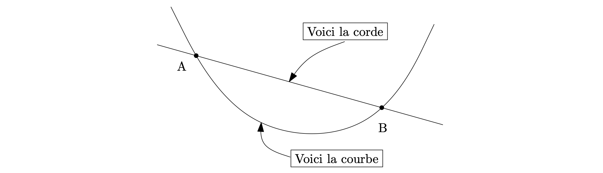
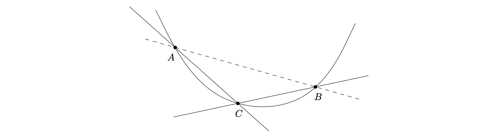

Convexité
Exercices : TD3
Convexe, Concave, Affine
-
Définition : Soit \(f:I\to \mathbb{R}\), \(f\) est dite convexe si elle vérifie
-
\(f\) est dite concave si elle vérifie
-
Si \(f:I\to \mathbb{R}\) est à la fois convexe et concave, alors \(f\) est affine.
-
Propriété : Sur l'intervalle \([a,b]\), la courbe passe en-dessous de sa corde entre \(a\) et \(b\). En-dehors de l'intervalle \([a,b]\), elle passe au-dessus de cette corde. Elle doit aussi être au-dessus de sa tangente. 
-
Propriété : la midconvexité - Soit \(f\) est une fonction continue sur \(I\), alors
Épigraphe
-
Définition : Soit \(f: I \to \mathbb{R}\), on appelle épigraphe de \(f\) l'ensemble
-
Soit \(\mathcal{C}\subset \mathbb{R}^n\), On dit que \(\mathcal{C}\) est convexe (c'est-à-dire partie convexe) si
-
Propriété : La fonction \(f\) est convexe \(\iff\) L'épigraphe \(\mathcal{E}_{f}\) de \(f\) est un ensemble convexe
Propriétés
-
Propriété : Inégalité des pentes : On a que \(f\) est convexe ssi : pour \(\forall (x,y,z) \in I^3\),
- 记忆：固定一点，另外一点坐标越大，斜率即越大。 
-
Propriété : Inégalité des pentes, Taux d'accroissement d'une fonction convexe : L'application de \(f\), \(f\) est convexe ssi :
-
Si \(f:I\to \mathbb{R}\) une fonction convexe, alors \(f\) est continue sur \(I^\circ\).
-
Si la fonction est continue et dérivable :
- Soit \(I\) un intervalle ouvert de \(\mathbb R\), soit \(f\in \mathscr C(I,\mathbb R)\) ayant en tout point une dérivée à droite telle que \(f_d'\) soit croissante, alors \(f\) est convexe. Rappel : Souvent c'est obligatoire d'assurer si \(\underset{{x \to x_0^-}}{\lim}f_d'(x)<f_d '|_{x=x_0}\).
-
Si la fonction est continue et deux fois dérivable :
Inégalités
Cas Discrète
-
Inégalité de convexité discrète : Soit \(f:I \to \mathbb{R}\) convexe, tq \((\lambda_{1},\dots,\lambda_{n})\in(\mathbb{R}_{+})^n\), alors Autrement dit : L'image du barycentre à coefficients positifs est inférieure ou égale au barycentre des images.
-
Cas \(f: x \mapsto x^{b/a}\), \(\bar x = x^a\) :
-
Cas \(f = \exp\), \(\bar x=\pm\ln (x)\) :
-
-
Inégalité de Cauchy-Schwarz discrète : Retour vers l'inégalité de Cauchy-Schwarz :
-
Inégalité de Hölder discrète : Soit \(p\) et \(q\) deux nombres réels de \(]1, +\infty[\) tels que Soit \((a_{1},\dots,a_{n},b_{1},\dots,b_{n})\in \mathbb{R}_{+}^{2n}\). Alors,
Inégalité de Jensen
-
Inégalité de Jensen ou Inégalité de convexité continue : Soit \(I\) un intervalle de \(\mathbb{R}\), soit \(f\) et \(h\) définis, continues par morceaux sur \(I\) avec \(h \geq 0\), et telles que
Soit \(\phi\) une fonction convexe définie sur un intervalle ouvert \(J\) contenant \(f(I)\) et telle que
Alors,
-
Cas spécial :
-
Inégalité de Cauchy-Schwarz continue : En justifiant que tous les choses existents, on a :
-
Inégalité de Hölder : En justifiant que tous les choses existents, on a :